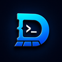
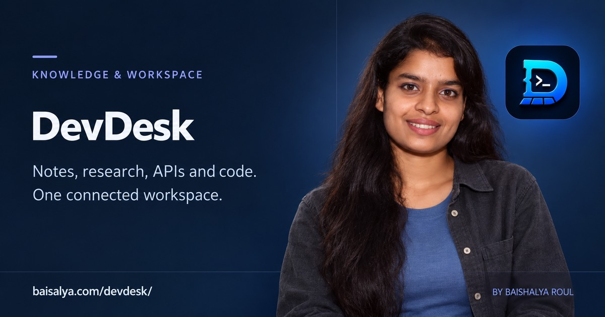
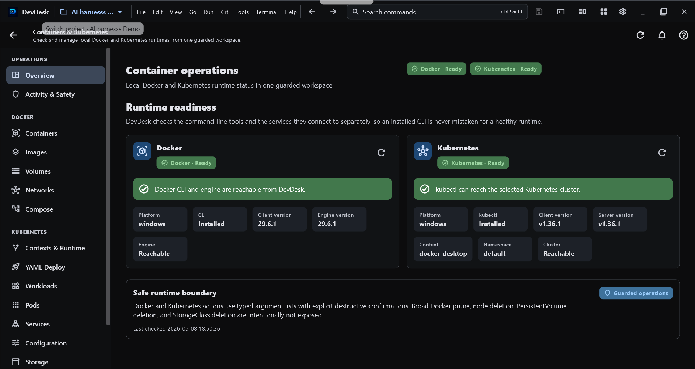
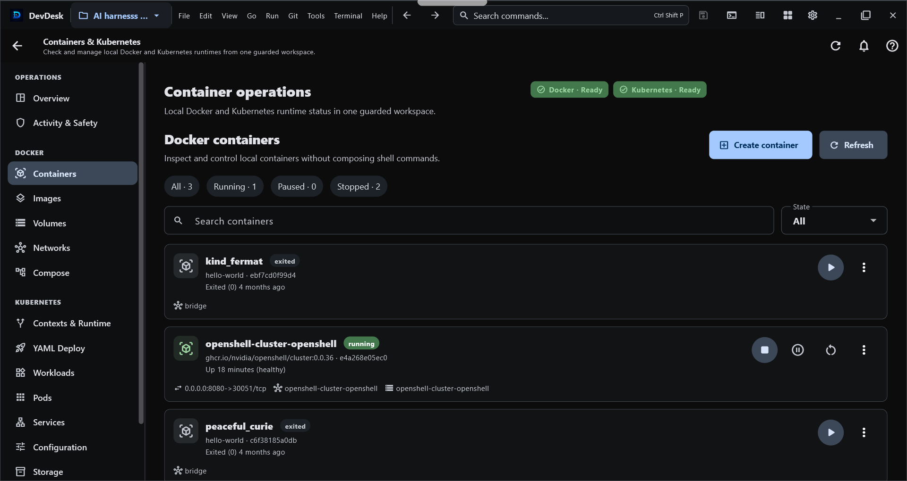
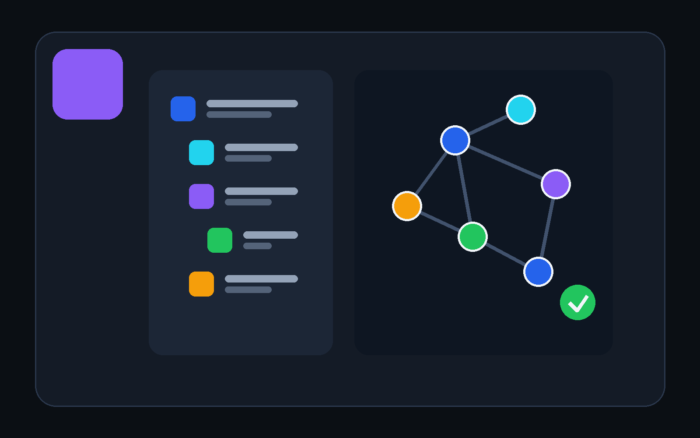
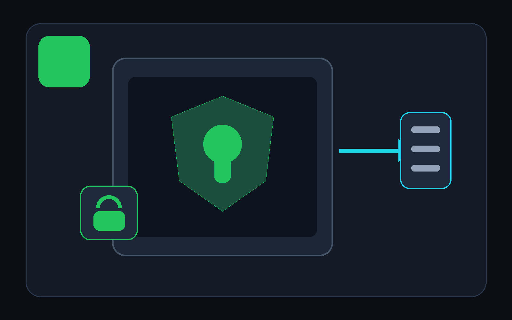
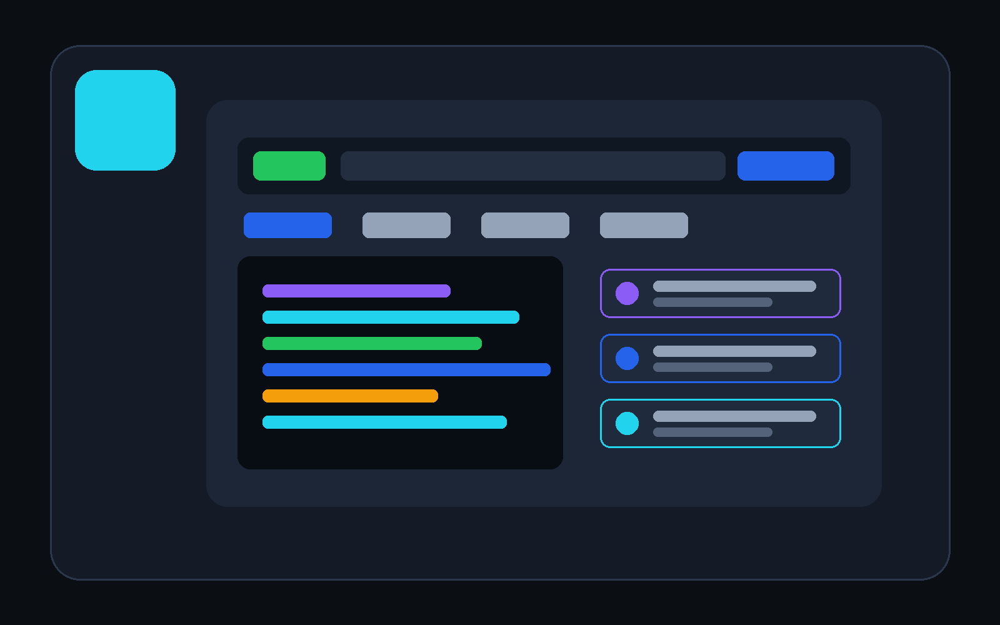

Bring your preferred model
Connect DeepSeek, OpenAI, a compatible endpoint, or a local Ollama server. The Windows preview composer shows the selected model, provider, and connection type.

DevDeskWork your way. Keep your files.Turn a folder into a workspace for notes, plans, API tests, and code. Bring your own AI model, follow its work in chat, and review changes before they land.
Available for Windows and Android. See published builds and platform details.
DevDesk · Brand ambassador
Link research to a plan, keep an API result with the bug it explains, and track the code change in the same workspace.
Find your starting point
DevDesk · Represented by our brand ambassador
Use AI Harness to study, plan, or draft. Open AI Workbench in a software project to bring in relevant files, see what the agent is doing, and review its proposed edits.
Connect DeepSeek, OpenAI, a compatible endpoint, or a local Ollama server. The Windows preview composer shows the selected model, provider, and connection type.
Attach a supported file or photo for a study guide, summary, or draft. In a project, share the specific files and notes the task needs.
The Windows preview shows project activity in chat, from reading a file to preparing a proposal or running a supported check. Copy fenced code straight from the reply.
Open Review changes to inspect affected files and diffs. Approve the proposal and see the outcome of the checks you select where supported.
Watch Codex use DevDesk to follow a linked project graph and prepare a coding proposal for review. Try the guide with your own project when you are ready.
The illustrated chat controls are from the Windows development preview. Features vary by build and platform. AI requires a provider you configure.
For IT teams, the managed Windows pilot supports a company-run model gateway, signed policy, and local audit events.
Students can turn material into structured work. Researchers can connect notes and sources. Professionals can organize projects and decisions. Creators can plan and draft. Developers can continue into APIs, Git, agents, verification, Docker and Kubernetes—all without changing products.
Connect research, organize notes, plan projects and draft work in plain language. Start with the material you already have.
Keep docs, code context, API work, Git, and agent-assisted changes around the selected workspace instead of scattering them across tools.
The standalone DevDesk CLI brings files, knowledge, API tests, local data, and operations to your shell. Explore the complete command reference checked against DevDesk CLI 1.2.6+21, with examples and options for all 86 top-level usage lines.
Create folders and files, inspect and search a project, read Git status, compare files or folders, and query Markdown headings, metadata, links, backlinks, graph issues, and paths.
Send HTTP requests, run saved API collections with environment and report options, validate OpenAPI, and use JSON, Base64, URL, regex, UUID, timestamp, and JWT utilities.
Manage workspace manifests, snippets, notes, settings, and backup files. Preview a restore before applying it, or use a separate data directory for an isolated profile.
Check runtimes, inspect containers and Kubernetes workloads, read logs, and use ADB device lists, screenshots, UI inspection, and logcat. Docker lifecycle actions and ADB controls require explicit confirmation flags.
Inspect providers, plan an explicit prompt, run AI with consent, view saved agents and activity, schedule graph-health automation, and manage review-first routines from your terminal.
Inspect verification plans, run selected checks, set process timeouts, generate shell completion, export diagnostics, and use JSON output and documented exit codes in scripts.
DevDesk combines beginner-friendly applications and wizards with the raw resources advanced users still need. Runtime Doctor, deterministic Kubernetes troubleshooting, Compatibility Packs, RBAC/context guards and a shared operation engine make the GUI easier to use without hiding the underlying runtime.
See Compose projects as logical apps, keep standalone containers separate, and use one canonical Create Container wizard with Simple and Advanced paths.
Correlate workloads, Pods, Services, Ingress, configuration metadata and Warning events, then open Describe, logs, rollout, restart, scale or terminal actions from deterministic findings.
Use guided kind/minikube cluster creation and a visual Deploy App builder, while generated YAML, dry-run, diff, Apply and rollout verification remain reviewable.
Import validated JSON/YAML Compatibility Packs for version rules, warnings, disables and bounded aliases—never arbitrary shell or PowerShell execution.
Guarded Kubernetes actions verify the selected identity and run read-only authorization preflight instead of relying on a stale screen selection.
Conflicting mutations are coordinated centrally, durable history stays redacted, and interrupted operations are recovered instead of appearing permanently active.


Real DevDesk interface. These captures show selected runtime/container surfaces; the updated manual also covers Applications, cluster creation, Deploy App, Compatibility, guided troubleshooting, RBAC guards and unified operations.
Desktop runtime: local Docker and kubectl operations require a supported desktop runtime. Android can share the product experience and entitlement, but this release does not advertise a remote container runtime.
DevDesk keeps ordinary project files as the source of truth, then gives them useful views, relationships, portability, and optional specialist tools. You can begin without learning Markdown, Git, JSON, or AI.

See the same task, note, goal, meeting, or decision as a list, table, cards, board, calendar, timeline, outline, map, or relationship.

Your content stays in the folder you chose. Open it in another editor, back it up normally, and share only the files you approve.

Add connected Markdown, portable Visual Canvas, JSON, OpenAPI, saved API testing, OKF checks, Diff, and workspace-scoped Git as needed.
AI can prepare something useful. DevDesk also gives that output a place to live, a way to connect, a schedule, project context, and safety controls—so the work can continue after the chat ends.
Tasks, goals, meetings, assignments, and decisions in Today, Board, Calendar, and Timeline views.
Start a workspaceFollow backlinks in the Knowledge Graph or map an idea in Visual Canvas and Diagram Studio.
Explore the graphSave requests, environments, and checks in API Studio. Attach a redacted response or diff snapshot to the note it explains in the development preview.
Explore API WorkspacesUse AI Workbench, file diffs, and scoped Git. Give a compatible external MCP agent selected project context when you need it.
Explore AI WorkbenchSet Windows or Android reminders, opt in to supported AI routines, or use the CLI for repeatable work. Desktop tools cover Docker and Kubernetes.
Explore the CLIKeep ordinary project files in your own folder. Back it up, copy it, or reopen it from a clone.
Understand portable projectsApp-matched HTML previews show the real DevDesk layout without using a private project screenshot. Open any card for the exact workflow, platform behavior, and safety boundary.
Five tabs stay visible. Every additional file or tool remains in the numbered hidden-tab menu.
Tour the workspace workbenchLocal or Workspace scope, filters, groups, timeline replay, display controls, and dynamic spacing.
Understand the knowledge graphSearch shapes, connect ideas, use templates or auto layout, then export PNG or SVG.
Open the Diagram Studio guideCollections, environments, checks, responses, and protected values stay organized around the selected project.
Explore API StudioPreview a new workspace, or open an existing folder without writes. Add portable identity only when you choose it.
DevDesk derives views and relationships. Safe project writes stay reviewable, bounded, and conflict-aware.
Open project.devdesk. Local registration and indexes
are rebuilt; protected values and trust stay device-local.
| When your work changes | What DevDesk adds | What remains the source of truth |
|---|---|---|
| A task needs a deadline | Calendar or Timeline can show it | The same task file |
| Notes begin to connect | Relationships and Graph can follow saved links | The same Markdown files |
| A project becomes technical | JSON, OpenAPI, API, Diff, and scoped Git tools become useful | The selected project folder |
| You move to another device | DevDesk rebuilds local registration and indexes | The copied or cloned folder and project.devdesk |
Views are derived from the same workspace content. DevDesk does not create a second cloud copy of the project behind your back.
Read-only indexes can rebuild automatically. Project writes use Manual, Review changes, or bounded Safe automatic mode. Secrets, cookies, execution trust, recents, and personal layout do not belong in portable project files.
Existing paths and external file changes are preserved and reported.
Your selected folder remains the home of the project. Network tools act only when you use them.
Opening a folder does not run Git, scripts, terminals, or project commands. Bounded execution needs a separate local decision.
Select the workspace, inspect every proposed write, verify on Windows, and isolate parallel workers in Git worktrees. The optional Edge Browser Agent and MCP Agent Connector remain behind exact permissions, so project context never becomes blanket authority.
DevDesk does not include an AI provider or subscription.
Find guidance from the published manual without leaving this page. Each answer links to its source so you can check the details. Your question stays in your browser. No account, API key or hosted AI service is needed.
Watch Codex follow a DevDesk knowledge graph from one task to the relevant brief, architecture, source, and tests. Then download the exact starter workspace and reproduce the review-before-write flow on your own device.
Choose the starter that feels closest, then make it yours. Windows and Android are available now.
Use a fictional JSON body to check input syntax, URL encoding, identifiers and time units, then save a sanitized report another developer can reproduce.
Read the API debugging guide →